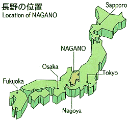
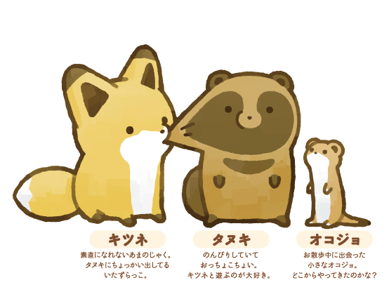

長野県とは、本州の中央部に位置します。8つの県と隣あっており、日本で一番近隣県が多いです。面積は13,561.56平方キロメートルであり全国で4番目に大きい県です。長さは東西約120キロメートル、南北約212キロメートルです。約200万人の人々が生活をしています。長寿県としても有名です。
 長野県は広いためまだ全然周り切れてません。その中でも、長野県の中の千曲市を中心に見ていこうと思います。すこしでも興味を持ってくれると嬉しいです。 また、世界的に新型コロナウイルスの流行により旅行に行けないので、旅行気分を味わえてっていただければ幸いです。そして、終わった際には訪れてみて下さい。 ちなみにこの画像は長野県には関係ないです。私の好きなキャラクターです。タヌキとキツネです。ゆるくかわいいキャラクターで皆さんも癒されてください。